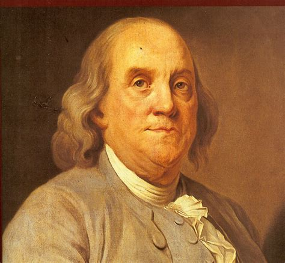

Benjamin Franklin
Quick Facts
Famous As:Founding Father Of The United States
Nationality:American
Birthday:January 17, 1706
Died At Age: 84 Years
Sun Sign: Capricorn
Born In: Boston, Massachusetts Bay
Father:Josiah Franklin
Mother:Abiah Folger
Spouse/Ex-Spouse:Deborah Read (M. 1730–1774)
Died On:April 17, 1790
Place Of Death:Philadelphia, Pennsylvania
Discoveries/Inventions: Lightning Rod, Bifocals, Franklin Stove, Carriage Odometer, Glass Armonica, Bifocal Glasses And The Flexible Urinary Catheter